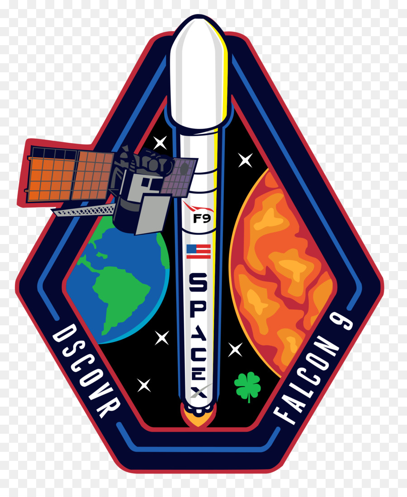

Hyperblog
Tu blog de confianza
Este es un título tilde en html atractivo e interesante del post
Y este es el párrafo tilde en html de inicio donde vamos a explicar las cosas increíbles que se pueden hacer con ramas
los blogs son la mejor forma de compartir información y tus ideas. mucho más que ir a conferencias o salir en youtube. Excepto si eres un rockstar. Pero estadísticamente no lo eres... por ahora.